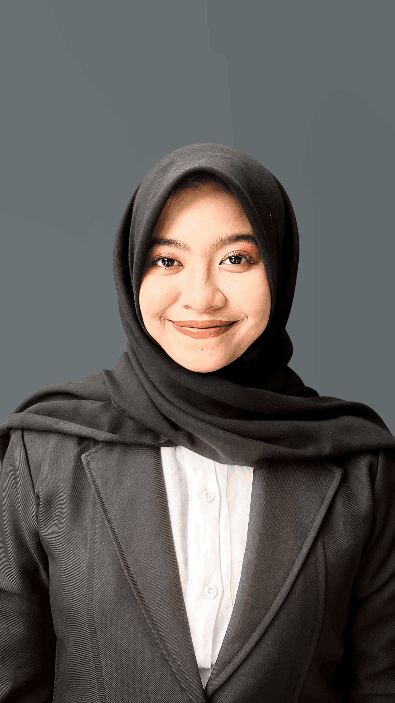

Lulusan S1 Teknik Komputer Universitas Syiah Kuala (IPK 3,69) dengan keahlian teruji dalam pengelolaan administrasi, pencatatan transaksi keuangan, pengolahan data terstruktur, dan komunikasi publik. Memiliki motivasi tinggi, teliti, adaptif, serta berdedikasi untuk memberikan kontribusi nyata di industri perbankan syariah dan korporasi modern.

Menggabungkan latar belakang akademis Teknik Komputer dengan pengalaman nyata di bidang administrasi finansial dan publikasi komunikasi.
Saya adalah lulusan S1 Teknik Komputer Universitas Syiah Kuala dengan predikat kelulusan sangat memuaskan (IPK 3,69). Selama masa studi dan perjalanan karir profesional, saya aktif memperdalam keterampilan dalam administrasi operasional, pembukuan keuangan harian, pengolahan basis data, serta pengelolaan media digital.
Kemampuan analitis dari ilmu komputer memungkinkan saya bekerja cepat, sistematis, dan mengutamakan efisiensi berbasis teknologi. Saya terbiasa berkomunikasi dengan beragam stakeholder secara santun, profesional, dan empatik.
Termotivasi tinggi untuk mengembangkan karir di industri perbankan syariah dan institusi finansial terkemuka dengan menerapkan ketelitian kalkulasi, integritas kerja, dan pelayanan nasabah yang unggul.
Pencatatan kas harian, rekonsiliasi SPP, penyusunan laporan keuangan terpadu berbasis Microsoft Excel dengan akurasi tinggi.
Tersertifikasi Oracle Academy dalam Database Design (ERD, normalisasi, dan relasi data) untuk efisiensi kearsipan digital.
Memproduksi 116+ materi edukasi dan promosi menggunakan Canva & CapCut, serta berpengalaman di kehumasan dan publikasi komunitas.
Kemampuan interpersonal yang luwes, tanggap terhadap kebutuhan nasabah/klien, serta memiliki etos kerja disiplin dan berintegritas.
Rekam jejak kontribusi di institusi pendidikan, instansi pemerintah, dan organisasi kemahasiswaan.
Pengembangan sistem otomasi irigasi persawahan berbasis Internet of Things (IoT), transmisi AWS Cloud, dan aplikasi Android interaktif.
Solusi terintegrasi untuk menjaga kelancaran debit air dan kebersihan saluran irigasi persawahan secara cerdas dan otomatis. Proyek ini menggabungkan rekayasa perangkat keras mikrokontroler ESP32, arsitektur *cloud backend* AWS untuk penanganan data telemetri, serta antarmuka aplikasi Android mobile sebagai pusat monitoring dan kendali jarak jauh.
Kombinasi keahlian teknis operasional, pengolahan data, alat kreatif, serta keterampilan interpersonal.
Penguasaan formula kalkulasi keuangan (VLOOKUP, IF, SUMIFS, Pivot Table), rekap transaksi, dan audit data administratif.
Pencatatan kas masuk/keluar, rekonsiliasi SPP, penyusunan laporan keuangan berkala, dan verifikasi kuitansi/nota.
Sistematisasi dokumen fisik dan digital, penomoran surat, tata kelola data siswa/klien, serta rekapitulasi pelaporan.
Pemahaman mendalam tentang Entity Relationship Diagram (ERD), normalisasi data 1NF-3NF, dan struktur relasional.
Pembuatan laporan resmi standar instansi, korespondensi formal, serta slide presentasi interaktif dan profesional.
Desain grafis media promosi, flyer informasi, pengeditan video reels/TikTok, dan manajemen feed media sosial (116+ konten).
Komunikasi persuasif, melayani pertanyaan wali siswa dan mitra kerja dengan ramah, solutif, serta menjaga citra instansi.
Kemampuan analisa detail, adaptasi cepat terhadap sistem kerja baru, manajemen waktu efisien, dan tanggung jawab tinggi.
Bukti dedikasi, inovasi, dan keunggulan kompetitif di tingkat nasional maupun institusional.
Terpilih sebagai salah satu dari 50 tim terbaik dari total 165 tim perguruan tinggi se-Indonesia dalam program pengabdian sosial dan inovasi teknologi.
Berhasil menembus ajang paling bergengsi mahasiswa Indonesia sebagai Finalis PKM-KC serta menjadi Penerima Hibah Pendanaan PKM 2024 Kemendikbudristek.
Tercatat secara resmi sebagai salah satu pemegang hak cipta atas inovasi perangkat lunak sistem cerdas Eco-Flow.
Penerima penghargaan Tenaga Pendidik/Kependidikan Inovatif atas dedikasi dan terobosan dalam memodernisasi kanal media sosial dan kearsipan institusi.
Meraih Juara Harapan 1 dalam kompetisi pembuatan video kreatif berbasis literasi melalui penyusunan storytelling dan pengeditan audio visual berkualitas.
Menyelesaikan pendidikan sarjana dengan capaian akademik tinggi (High Distinction) yang membuktikan disiplin, kecerdasan analitis, dan daya juang tinggi.
Siap mendiskusikan peluang karir, rekrutmen perbankan syariah / korporasi, atau kolaborasi profesional.
Jangan ragu untuk menghubungi atau terhubung dengan saya melalui WhatsApp, Email, LinkedIn, Instagram, atau TikTok. Saya siap merespons komunikasi Anda dengan cepat dan ramah.